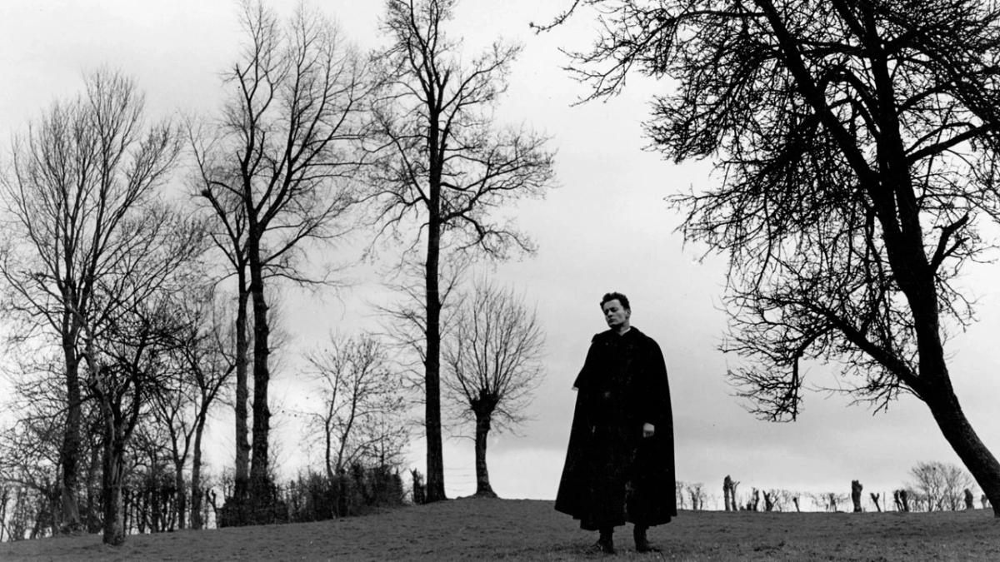
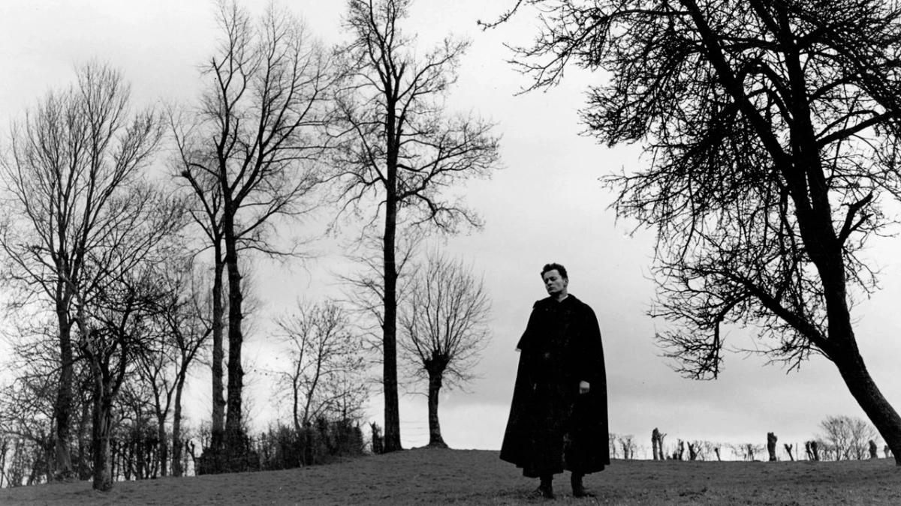

About the Country Priest
Sickly, saintly, doomed
The priest on his way to work.
Characteristcs
- He's got stomach cancer
- He tries to help
- A bit like Prince Myshkin
Friends
He has few friends. Click the links below:
Sickly, saintly, doomed
The priest on his way to work.
He has few friends. Click the links below: